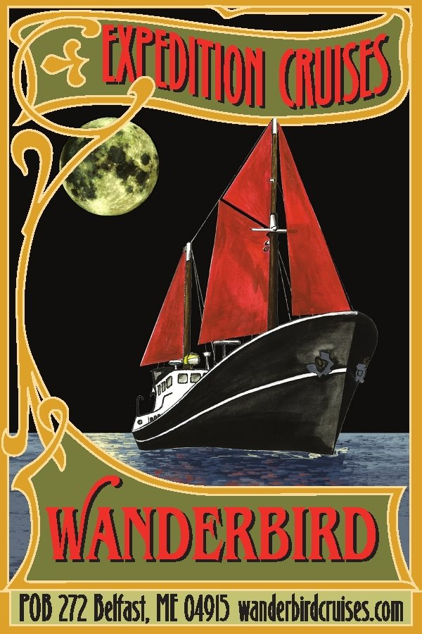

About Me
I grew up in MA and originally came to Maine for farming. A few years later, after working with kids and teaching them to grow food, I decided to become a teacher. I love to learn and help others learn new things.
I particularly enjoy teaching science because understanding science can help people make more informed decisions. In my spare time, I enjoy walking, playing with, and training my dog Bodhi and learning to code.


In addition to farming and teaching, I've also worked as a:
- lab tech in a microbiology lab
- deck hand and galley assistant on a ship
- case manager for formerly homeless people
... among other things.
If you want to know more, feel free to ask me :)